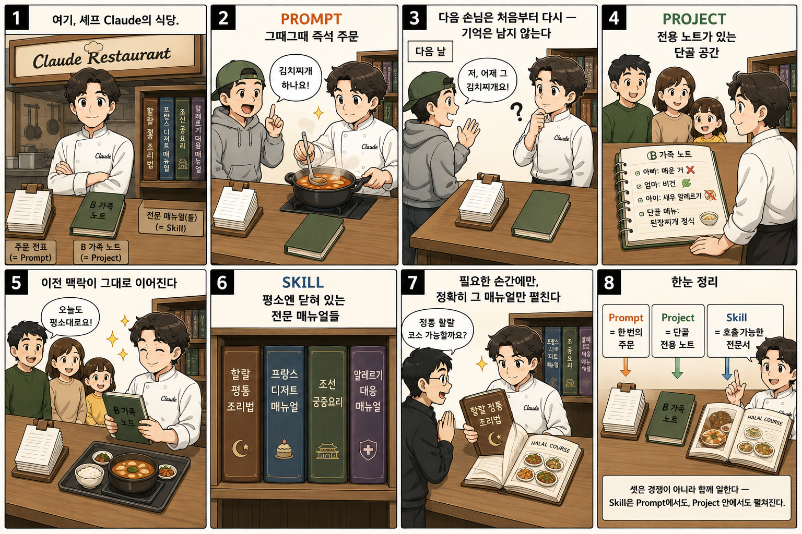
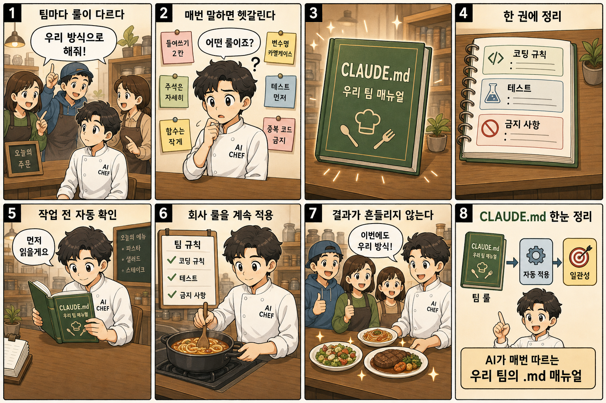
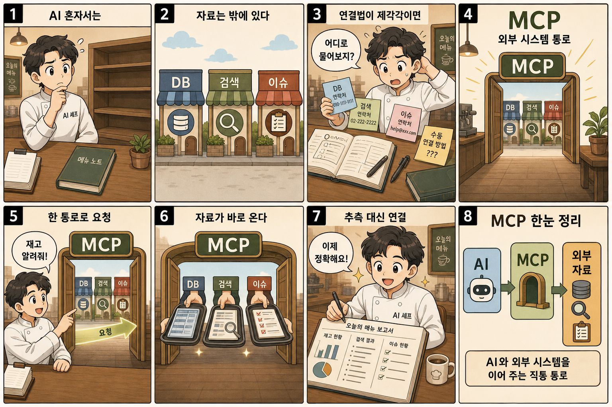
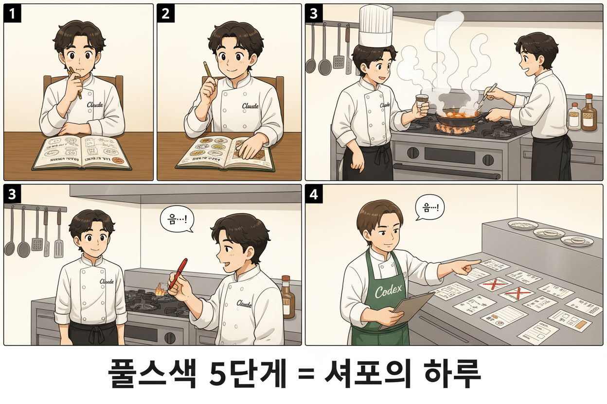
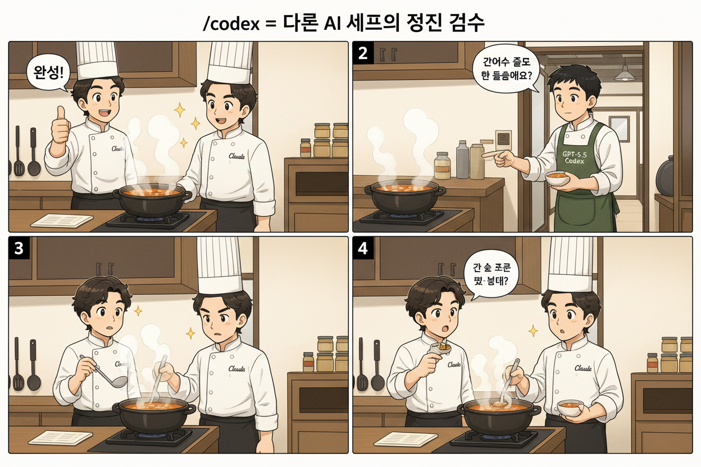
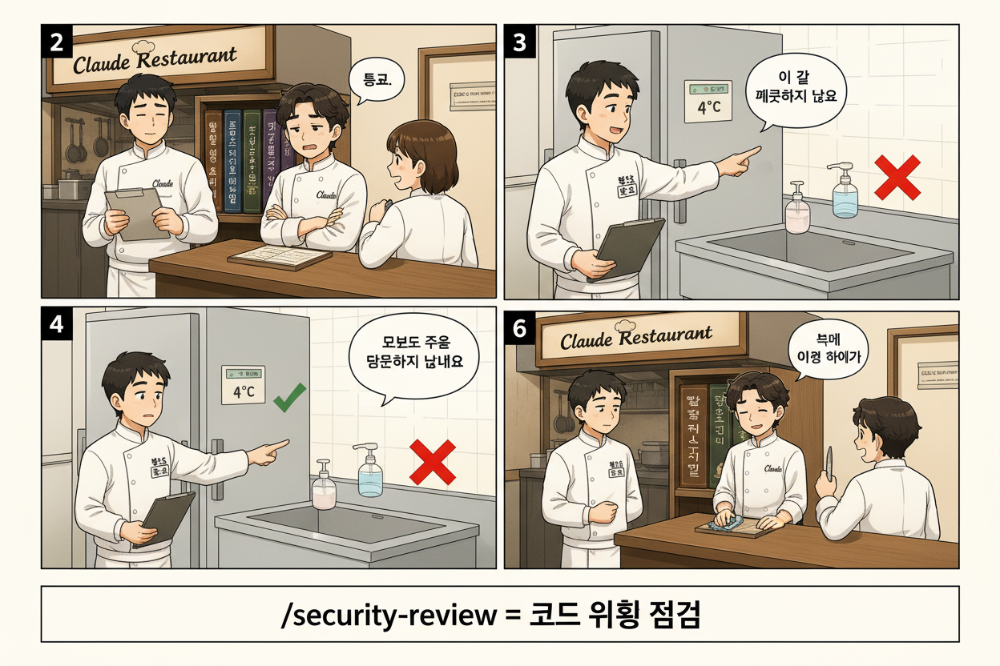

차시별 진행
준비 사항 | Claude Code 설치 완료 (사전 발송 가이드 — Day 1 1차시에 claude --version 통과 확인). DB 연결 없음 (정적 HTML + CSV).
토큰 | AI가 입출력을 처리하는 단위 (한글 1글자 ≈ 1~2 토큰). 비용은 토큰 수로 계산.
5차시 | 하네스 엔지니어링 + 5대 요소
1도입 영상 (60초)
2하네스 엔지니어링이란?
"하네스(Harness)"는 원래 말의 마구(馬具)입니다. 천 마력 말도 마구 없이는 밭을 갈 수 없습니다. AI 에이전트도 똑같습니다 — 모델이 아무리 뛰어나도 "어떻게 일하라"는 시스템이 없으면 매번 다른 결과가 나옵니다. 그 시스템을 설계하는 기술이 하네스 엔지니어링입니다.
프롬프트 엔지니어링 (2023) → 컨텍스트 엔지니어링 (2025) → 하네스 엔지니어링 (2026)
| 구분 | 프롬프트 엔지니어링 | 하네스 엔지니어링 |
|---|---|---|
| 범위 | 단일 입력 (한 번의 질문) | 영구적인 시스템 설계 |
| 지속성 | 세션 종료 시 사라짐 | 파일로 저장, 팀 전체 공유 |
| 구성 | 텍스트 프롬프트 1개 | 규칙 + 도구 + 스킬 + 훅 + 메모리 |
| 재현성 | 같은 프롬프트도 결과 다름 | 시스템이 일관된 결과 보장 |
| 대상 | 채팅 한 턴 | 전체 작업 흐름 |
핵심: 하네스 산출물(CLAUDE.md · 스킬 파일 · 훅 스크립트)은 전부 Git에 커밋되는 파일입니다. 팀원이 바뀌어도, 모델이 업그레이드되어도, 하네스는 남습니다.
IDE 플러그인과 달리 터미널에서 AI가 직접 파일을 읽고, 코드를 작성하고, 빌드·테스트까지 수행하는 도구. Claude Code · Copilot CLI · Gemini CLI · Codex CLI 등.
에이전트가 프로젝트 규칙을 따르고 반복 실수를 하지 않도록 환경을 체계적으로 구성하는 기술. 5요소(CLAUDE.md · MCP · Skills · Hooks · Memory)의 조합.
.md 문서로 계획·요구사항을 먼저 정리하고 AI에게 실행을 위임하는 패턴. 성숙한 팀의 표준 워크플로우. Superpowers의 writing-plans가 이 패턴.
반복되는 입력 토큰을 재사용해 LLM API 비용을 30~50% 줄이는 기법. CLAUDE.md · SKILL.md 같은 정적 컨텍스트가 자동으로 캐시되어 매 세션 토큰비가 낮아집니다.
3핵심 개념 | 하네스 5대 요소
4만화로 보는 5대 요소
셰프 식당 메타포 — 각 요소가 식당 운영의 어디에 해당하는지.

즉석 주문 · 단골 노트 · 전문 매뉴얼

가게 룰북 — 매 세션 자동 로드

거래처 직통 라인
오븐 알람 — 자동 트리거
5대표 하네스 플러그인 (각 5+ 스킬)
5대 요소를 미리 묶어둔 오픈소스 플러그인. 오늘은 Superpowers만 설치하고, 나머지는 필요할 때 회사 환경에 맞게 골라 도입합니다.
| 스킬 | 언제 · 무엇 |
|---|---|
brainstorming | 새 기능·3+ 파일 변경 시 설계 전 다지선다 인터뷰 + 트레이드오프 |
writing-plans | 6+ 파일 대형 작업의 태스크 분해 + 순서·의존성·체크포인트 |
systematic-debugging | 버그 원인 불명확 시 가설 3+ 수립 → 검증 → 근본 원인 확정 |
verification-before-completion | 완료 주장 전 type-check · build · test 강제 검증 |
requesting-code-review | 독립 컨텍스트에서 코드 리뷰 위임 |
test-driven-development | TDD — 실패 테스트 → 구현 → 통과 사이클 |
dispatching-parallel-agents | 독립 작업 2+ 병렬 서브에이전트 분배 |
| 스킬 | 언제 · 무엇 |
|---|---|
careful | 위험 명령 자동 차단 (rm -rf · DROP · force-push) |
freeze | 작업 디렉토리 범위 제한 — 다른 폴더 수정 금지 |
unfreeze | freeze 해제 |
guard | careful + freeze 통합 안전 모드 |
browse | 헤드리스 QA — 자동 클릭 · 폼 입력 · 스크린샷 |
qa | 대화형 QA 시나리오 실행 |
connect-chrome | 가시적 Chromium 실행 — 실시간 인터랙션 |
| 스킬 | 언제 · 무엇 |
|---|---|
autopilot | 아이디어 → 완성 코드까지 완전 자율 실행 |
ralph | 끝날 때까지 무한 루프 (테스트 통과까지) |
ultrawork | 여러 파일 동시 최대 병렬 리팩토링 |
team | N개 에이전트 팀 협업 (Frontend + Backend + Test) |
plan | Planner + Architect + Critic 합의 전략 계획 |
analyze | 딥 분석 — 메모리 누수 · 성능 병목 · 아키텍처 |
build-fix | 빌드 · 타입 에러 자동 수렴 |
code-review | code-reviewer 에이전트 자동 호출 |
회사 환경에서 외부 마켓 접근 제한 시 — 필요한 SKILL.md만 .github/skills/{name}/SKILL.md 또는 .claude/skills/{name}/SKILL.md에 직접 배치하면 동일 작동.
6실습 | context7 MCP + Superpowers 플러그인 설치
명령어를 외울 필요 없습니다. GitHub 주소를 그대로 던지면 AI가 알아서 설치합니다. Claude Code · Copilot CLI 양쪽 동일.
실습 1 — context7 MCP (공식 SDK 문서 조회)
"https://github.com/upstash/context7 이 MCP 설치해줘" # AI가 자동 실행: # claude mcp add context7 -- \ # npx -y @upstash/context7-mcp@latest # (Copilot은 copilot mcp add ...) # 재시작 후 /mcp # → context7 등록 확인
# Claude Code claude mcp add context7 -- \ npx -y @upstash/context7-mcp@latest # Copilot CLI (동등) copilot mcp add context7 -- \ npx -y @upstash/context7-mcp@latest
테스트 쿼리 (양쪽 동일):
React Query v5의 useQuery 사용법을 최신 공식 문서에서 찾아줘.
실습 2 — Superpowers 플러그인 (코딩 워크플로우 4종)
"https://github.com/obra/superpowers 이 플러그인 마켓플레이스 추가하고 superpowers 설치해줘" # AI가 자동 실행: # /plugin marketplace add \ # obra/superpowers-marketplace # /plugin install \ # superpowers@superpowers-marketplace
brainstorming └─ 새 기능 함께 고민 writing-plans └─ 3단계+ 구현 계획 작성 systematic-debugging └─ 4단계 구조화 디버깅 verification-before-completion └─ 완료 주장 전 검증
테스트 (Phase 1 시작 시 자연 발동):
"새 기능 만들기 전에 brainstorming 스킬로 같이 고민해보자"
터미널 처음이신 분 | 옆 분과 짝을 지어주세요. 한 명이 따라하면 같이 봅니다.
회사 환경에서 외부 마켓 접근 제한 시 — 필요한 SKILL.md만 .github/skills/{name}/SKILL.md 또는 .claude/skills/{name}/SKILL.md에 직접 복사하면 동일하게 작동합니다.
7Superpowers 스킬 자연어 호출 예시
스킬은 활성화될 때만 로드되는 점진적 공개 — 매 세션 시작 시 메타데이터(~100 토큰)만 스캔, 호출 시점에만 본문(~5,000 토큰) 로드. 스킬 이름을 외울 필요 없습니다 — 상황을 그대로 말하면 AI가 적합한 스킬을 자동 활성화.
| 상황 | 자연어 호출 (예시) | 발동 스킬 |
|---|---|---|
| 새 기능 시작 | "새 기능 만들기 전에 같이 고민해보자" | brainstorming |
| 대형 작업 계획 | "이 기능 구현 계획을 plan.md로 작성해줘" | writing-plans |
| 버그 원인 모름 | "이 에러 어디서 나는지 모르겠어, 체계적으로 디버깅" | systematic-debugging |
| 완료 주장 전 | "커밋 전 type-check · build · test 다 돌려서 확인" | verification-before-completion |
| 코드 리뷰 위임 | "이 PR 독립 컨텍스트에서 리뷰해줘" | requesting-code-review |
다음 차시 예고 | 6차시에서 Superpowers 4종(brainstorming · writing-plans · verification · debugging) + /security-review로 POS 데이터 분석 앱을 풀스택 5단계로 함께 만듭니다.
수강생 Copilot 환경에 그대로 적용
강사는 Claude Code로 시연합니다. 수강생은 본인 GitHub Copilot 환경에서 같은 흐름을 따라합니다. 파일명·SKILL.md 형식·hook 이벤트명까지 양쪽 동일(GitHub Agent Skills 표준).
| 강사 (Claude Code) | 수강생 (GitHub Copilot) | 비고 |
|---|---|---|
CLAUDE.md (repo root) |
AGENTS.md (1순위) · CLAUDE.md / GEMINI.md도 인식 |
AGENTS.md는 repo root / cwd / 환경변수 경로. Copilot CLI 공식 (2025-08~). |
~/.claude/CLAUDE.md (글로벌) |
~/.copilot/copilot-instructions.md 또는 .github/copilot-instructions.md |
전역은 home, 레포 전체는 .github/. |
.claude/skills/{name}/SKILL.md |
Project: .github/skills/{name}/SKILL.md · .claude/skills/{name}/SKILL.md · .agents/skills/{name}/SKILL.mdPersonal: ~/.copilot/skills/{name}/SKILL.md · ~/.agents/skills/{name}/SKILL.md |
파일명·frontmatter는 GitHub Agent Skills 표준으로 양쪽 동일. 경로는 도구·범위(project/personal)별로 다름. Copilot은 여러 경로를 모두 인식. |
| (별도 개념 없음) | .github/instructions/*.instructions.md |
Copilot 전용 — 경로별(path-specific) 코딩 룰. |
~/.claude/hooks/ |
.github/hooks/ (repo) · ~/.copilot/hooks/ (user) |
JSON 포맷, bash/powershell 모두 지원. |
| Hook 이벤트 | 동일 이름! preToolUse · postToolUse · sessionStart · sessionEnd · userPromptSubmitted · errorOccurred · agentStop |
Claude Code의 PreToolUse/PostToolUse/Notification/Stop과 거의 1:1. |
/plugin marketplace add/plugin install superpowers@claude-plugins-official |
(예시) copilot plugin marketplace add obra/superpowers-marketplace — obra/superpowers README 명시. 회사 환경에서는 사전 확인 필요.대안: skill 디렉토리 직접 복사 ( .github/skills/) 또는 gh skill CLI 검토. |
obra/superpowers README엔 Copilot CLI 명령 예시 제공되나 회사 정책상 외부 마켓 접근 제한 가능 — 직접 배치가 안전. |
MCP (claude mcp add) |
copilot mcp add 또는 Copilot Extensions (베타) |
외부 도구 연결. 설치 명령 동등. |
| QMD · agentmemory | agentmemory는 Copilot CLI 직접 지원 X (2026-05). REST API 우회 필요 | 강사 시연(Claude Code) → 학생 차주 본인 PC에서 Claude Code 설치 후 시도, 또는 Copilot에 REST API 우회 (curl POST /agentmemory/observe). 12 hooks · 4-tier 메모리 · 51 MCP tools가 한 번에 등록되니 환경 부담 있음. |
/codex · /security-review · /simplify |
/security-review Anthropic 공식 (Copilot은 별도) · 인라인 프롬프트 "보안 검수해줘"로 대체 가능 |
/codex는 강사 OMC 종속. 수강생은 GPT 호출 인라인으로. |
핵심 메시지
- 회사 적용 1단계: 회사 repo에
AGENTS.md(또는 CLAUDE.md) 만들고 오늘 작성한 내용을 그대로 옮김 → Copilot이 인식. - 회사 적용 2단계:
skills/{name}/SKILL.md폴더 구조로 오늘 만든 스킬 그대로 옮김 → Copilot도 동일하게 활성화. - 차이점: 슬래시 명령 이름은 도구별로 다르나 개념·파일 구조·SKILL 사양은 동일.
6차시 | Superpowers로 POS 분석 앱 만들기 (풀스택 5단계)
/security-review로 pos_data.csv (205건)의 이상 5건을 elif chain으로 검사·출력하는 미니 분석 앱을 풀스택 5단계로 완주한다1오늘 만들 것 미리보기

| 단계 | 의미 (셰프) | Superpowers 스킬 (기본) | 참고 도구 |
|---|---|---|---|
| 1. PLAN | 메뉴 기획 | brainstorming | — |
| 2. DEVELOP | 요리 | writing-plans + 실제 코딩 | — |
| 3. VERIFY | 옆 셰프 시식 | verification-before-completion | — |
| (곁가지) DEBUG | 막힌 곳 파헤치기 | systematic-debugging | — |
| 4. REFACTOR | 레시피 간소화 + 외부 검수자 시선 | requesting-code-review | (팁) /codex · /simplify |
| 5. SECURITY | 보건소 위생 점검 | /security-review | — |
기본은 Superpowers 스킬. /codex (외부 OpenAI), /simplify (Anthropic 내장) 등 외부 검수 도구는 4단계 REFACTOR에서 참고용 팁으로만 다룹니다.
2POS 데이터 명세 (SAP IBP)
SAP Integrated Business Planning 표준 주요 지표 기반 9 컬럼 · 205건 (정상 200 + 이상 5):
| 컬럼 | 의미 | 예시 |
|---|---|---|
BASE_WEEK | 기술적 주 (YYYYWW) | 202618 |
PRODUCT_ID | 제품 SKU | AMP-TONER-001 |
LOCATION_ID | 장소 (점포·DC) | STORE_GANGNAM |
CUSTOMER_ID | 고객 (백화점·마트·면세점·온라인) | CUST_DEPT_LOTTE |
CUSTSTORESLSQTY | 고객 점포 판매 수량 | 720 |
CUSTSTORESLSPROMQTY | 고객 점포 판촉 판매 | 120 |
CUSTSTORESTOCKQTY | 고객 점포 재고 | 1500 |
CUSTDCSLSQTY | 고객 DC 판매 | 700 |
CUSTDCSTOCKQTY | 고객 DC 재고 | 8000 |
이상 5건 — elif chain 순서대로 검사 (한 row가 여러 카테고리 동시 매칭 안 되도록):
- STOCK 음수 —
STOCK < 0 - SLS=0인데 PROM>0 —
SLS == 0 AND PROM > 0 - 재고 결품 직전 —
SLS > STOCK AND STOCK >= 0 - DC 판매 0 —
DC_SLS == 0 - PROM > SLS —
PROM > SLS AND SLS > 0
3Phase 1 — PLAN (15분) | brainstorming 스킬
"새 기능 만들기 전에 같이 고민해보자"라고 말하면 brainstorming 스킬이 자동 활성화. 다지선다 인터뷰로 설계 의사결정.
"pos_data.csv (205건, SAP IBP 9컬럼)을 읽어 이상 5건을 elif chain으로 찾아 표 출력하는 미니 분석 앱을 만들고 싶어. 같이 설계해보자." # brainstorming 스킬 자동 활성화 # → 다지선다 인터뷰: # Q1. 출력: CLI 표 / HTML 페이지 / JSON? # Q2. 검사: 단일 함수 / elif chain / dispatcher? # Q3. 런타임: 순수 파이썬 / pandas?
research.md └─ pos_data.csv 9컬럼 명세 └─ 이상 5건 카테고리 분석 design.md └─ 다지선다 결정 결과 └─ 함수 분해 설계 └─ 의사 코드 골격
4Phase 2 — DEVELOP (30분) | writing-plans + 실제 코딩
"이 기능 구현 계획을 plan.md로 작성해줘"로 writing-plans 활성화. 태스크 분해 + 순서 + 체크포인트.
"plan.md를 todo 리스트로 변환하고 전부 구현해줘. 각 단계 완료 시 plan.md에 [x] 체크. 모든 작업 완료까지 멈추지 마. any 타입 쓰지 마, 지속적으로 type-check 실행."
강사 시연 흐름:
load_csv(path)— UTF-8 BOM 정합 + 9컬럼 파싱check_anomaly(row)— elif chain 5종 (위 명세 순서)main()— 205건 순회 + 정확히 5건 찾기 + 표 출력
5Phase 3 — VERIFY (10분) | verification-before-completion
"완료 주장 전 type-check · test · 실행 결과까지 다 확인해줘" → verification-before-completion 활성화.
# Claude가 자동 실행: python -m mypy pos_analyzer.py # type-check python -m pytest tests/ # test python pos_analyzer.py # 실제 실행 # → 정확히 5건 출력 확인 (이상 1·2·3·4·5)
막혔을 때: "이 에러 어디서 나는지 모르겠어, 체계적으로 디버깅" → systematic-debugging 자동 발동 (가설 3+ 수립 → 검증 → 근본 원인 확정).
6Phase 4 — REFACTOR (20분) | requesting-code-review + 외부 검수 팁
"이 코드 독립 컨텍스트에서 리뷰해줘" → requesting-code-review 활성화. 메인 세션과 분리된 코드 리뷰 에이전트가 자동 호출 — 작업한 사람이 자기 자신을 리뷰하는 함정 회피.

(팁) 외부 AI 검수 도구 — Superpowers 검수가 기본이고 아래는 참고용 선택지입니다.
/codex — OMC 플러그인 + Codex MCP 설치 시 OpenAI GPT 모델로 동일 코드를 다른 관점에서 리뷰. 다른 의견이 필요할 때 보조 도구.
/simplify — Anthropic 내장. 3개 리뷰 에이전트가 병렬로 검토(재사용성·품질·효율성) + 자동 수정.
7Phase 5 — SECURITY (10분) | /security-review
Anthropic 공식 슬래시 명령. 코드의 보안 취약점(CSV 파싱 — path traversal, 입력 검증, 의존성 보안 등) 자동 점검.

/security-review # Claude가 자동 분석: # - CSV path 파라미터 검증 # - 사용자 입력 sanitize # - 의존성 CVE 점검 # - 결과 요약 + 수정 권장
완주 체크 | pos_data.csv 205건 → 이상 정확히 5건 출력 (STOCK 음수 · SLS=0 PROM>0 · 재고 결품 · DC 판매 0 · PROM>SLS) + 보안 리뷰 통과 = 풀스택 5단계 완주.
7차시 | 조직 맞춤 스킬 토론·제작
1POS팀 업무 흐름 — 어떤 작업이 스킬이 되는가
스킬 후보의 핵심 조건은 "같은 양식·같은 절차로 매번 반복되는 작업". 회사 룰은 CLAUDE.md, 도메인 패턴은 SKILL.md입니다.
| 업무 | 반복성 | 스킬 후보 예시 |
|---|---|---|
| POS 거래 이상 탐지 | 매일 | pos-anomaly-check — elif chain 검사 + 보고 |
| 점포·SKU별 주간 리포트 | 매주 | weekly-store-report — SAP IBP 9컬럼 → 표·차트 |
| 판매 데이터 정합 검증 | 마감 시 | sales-reconcile — DC vs 점포 vs ERP 차이 |
| RFP·제안서 작성 | 월 1-2회 | proposal-bid — 양식·구조 자동 |
| 장애 보고서 | 발생 시 | incident-report — 5why + 후속 조치 템플릿 |
2SKILL.md 작성 가이드
두 부분으로 구성 — frontmatter(메타데이터)와 body(절차).
--- name: pos-anomaly-check description: POS CSV 이상 5종 (STOCK 음수, SLS=0 PROM>0 등)을 elif chain으로 검사하고 표로 보고. "이상 탐지", "anomaly", "POS 검사" 언급 시 자동 발동. --- # POS Anomaly Check ## 입력 - pos_data.csv (SAP IBP 9컬럼) - 검사 기간 (default: 최근 5주) ## 절차 1. CSV 로드 (UTF-8 BOM) 2. elif chain으로 5종 검사 (순서 — 중복 매칭 방지): ① STOCK < 0 ② SLS == 0 AND PROM > 0 ③ SLS > STOCK AND STOCK >= 0 ④ DC_SLS == 0 ⑤ PROM > SLS AND SLS > 0 3. 케이스별 row 정렬 + 표 출력 4. 발견 0건 시 "정상" 보고 ## 출력 형식 - 발견 건수 - 카테고리별 row (timestamp · SKU · LOCATION) - 후속 조치 제안
프론트매터 필수 필드:
name— 스킬 식별자 (kebab-case)description— 자동 발동 트리거. AI가 이 텍스트만 보고 스킬 발동 판단
description은 "언제 발동하는지"가 명확해야 — "OO 언급 시 자동 발동" 같은 패턴 권장.
회사 환경 저장 위치 (GitHub Agent Skills 표준 — 파일 형식 양쪽 동일):
| 도구 | 저장 위치 |
|---|---|
| Claude Code | .claude/skills/{skill-name}/SKILL.md |
| GitHub Copilot | .github/skills/{skill-name}/SKILL.md |
3그룹 토의 + SKILL.md 작성 (자유 그룹 3~4명) | 25분
3~4명 자유 그룹. 모르는 분들끼리도 OK. 도시바·아모레퍼시픽 POS팀 시각으로:
- 업무 인벤토리 (5분) — 우리 팀이 매주·매일 반복하는 작업 5개 나열
- 스킬 후보 1개 선정 (5분) — 가장 시간이 많이 소요되는 작업
- SKILL.md 작성 (15분) — frontmatter + 절차 + 출력 형식
AI에게 도움 요청 OK | 빈 페이지에서 시작하지 마세요. Claude Code/Copilot에 "POS 거래 이상 탐지 스킬 SKILL.md 초안 작성해줘 — 입력은 pos_data.csv, 출력은 표 형식"이라고 요청하면 AI가 frontmatter + 절차 골격을 만들어줍니다. 거기서 조원이 조직 룰에 맞게 다듬으세요.
4발표 + 상호 피드백 | 20분
각 조 5분 (발표 3분 + 질의 2분). 5조 기준 25분, 시간 여유 시 추가 토론.
발표 포맷:
- 1분 — 어떤 업무를 자동화하는 스킬인가 (목적·반복성)
- 1분 — 입력 · 절차 · 출력 (핵심 흐름)
- 1분 — 회사 적용 시 막힐 부분 (보안·권한·데이터 접근)
다른 조 피드백 — 2가지에 집중:
- description이 트리거하기 명확한가? — AI가 이 텍스트만 보고 발동 판단할 수 있어야
- 절차가 누가 봐도 따라할 수 있는가? — 새 직원 매뉴얼 수준
오늘 만든 SKILL.md는 회사 자산입니다 | 조원 중 한 분이 회사 repo (.github/skills/ 또는 .claude/skills/)에 커밋하면 팀원 전체가 같은 스킬을 활용 가능. 한 번 만들어두면 평생 자산이 됩니다.
8차시 | QMD · LLM 위키 · 지식그래프 · AI-Ops 안내
1QMD 재정리 (어제 설치한 도구)
QMD (Quick Markdown DB)는 로컬 마크다운 폴더 전체를 임베딩·인덱싱해서 의미·키워드 검색을 즉시 제공하는 로컬 도구. 어제 1차시에 설치 완료. 본 강의에선 추후 활용법만 안내합니다.
| 특징 | 설명 |
|---|---|
| 검색 방식 | BM25 (키워드) + Cosine similarity (의미) 결합 |
| 임베딩 모델 | 로컬 bge-m3 (1024dim, multilingual) — 외부 API 호출 0 |
| 응답 속도 | 약 1초 (수백 파일 단위) |
| 토큰비 | 0원 (로컬 처리) |
| 대상 | 회사 위키 · 세션 로그 · 기획 문서 등 마크다운 모음 |
추후 활용:
- 새 세션 시작 시 — "이전에 OO 관련 작업 있었나?" → qmd search로 자동 회상
- 중복 작업 방지 — 새 기획서 작성 전 유사 자료 검색
- 리서치 순서 — 사내 자료 1차 → 외부 검색 2차 (Tier 게이트)
2LLM 위키 — 자기 복제 운영 메모리
"RAG는 매번 검색해서 답을 만든다. LLM 위키는 지식이 쌓여서 답이 더 좋아진다." — Andrej Karpathy의 LLM Wiki 패턴.
| 구분 | RAG | LLM 위키 |
|---|---|---|
| 방식 | 매번 원문 검색 → 즉석 컨텍스트 | 원자료를 AI가 재구성한 장기 메모리 |
| 가치 | 정보 즉시 회수 | 축적될수록 답이 더 좋아짐 |
| 산출물 | 없음 (매번 새로 생성) | 위키 자체가 누적 자산 |
| 주제 | 외부 문서 | 나 · 우리 팀 (실패 · 판단 · 결정 맥락) |
3계층 구조 (Karpathy 패턴):
raw — 불변 원자료 (대화 기록, 프로젝트 메모, 회고) wiki — AI 소유 마크다운 (요약 · 엔티티 · 상호 링크) schema — 운영 규칙 (CLAUDE.md, lint 정책)
3가지 작업:
- ingest — 새 raw → wiki 페이지 · 엔티티 생성/갱신
- query — 위키만 읽고 답변 합성
- lint — 끊긴 링크 · 중복 개념 · 낡은 규칙 정리
핵심 원칙 — Gold In, Gold Out: "모으기만 하면 쓰레기통. 내 생각이 붙어야 지식이 됩니다." 목적 있는 수집만이 골드 데이터.
3무료 지식그래프 도구 8선 (학생 선택 가이드)
모두 오픈소스. LLM 호출 여부 · POS 환경 적합도 기준 비교:
| 도구 | GitHub | 라이센스 | LLM 비용 | 특징 · POS 적합도 |
|---|---|---|---|---|
| LightRAG | HKUDS/LightRAG | MIT | LLM 호출 필요 (Ollama 가능) | 경량 RAG + 그래프. 사내 RAG 1차 후보 |
| GraphRAG | microsoft/graphrag | MIT | ~$5-20/빌드 | Microsoft 공식. 대규모 사내 데이터 |
| txtai | neuml/txtai | Apache-2.0 | 로컬 모델 무료 | 검색 · 요약 · QA 통합. 가장 가벼움 |
| mem0 | mem0ai/mem0 | Apache-2.0 | LLM 호출 필요 | agent 메모리 특화 |
| cognee | topoteretes/cognee | Apache-2.0 | LLM 호출 필요 | 코드베이스 · 도메인 지식 그래프 |
| Kùzu | kuzudb/kuzu | MIT | 무료 (DB만) | 임베디드 그래프 DB. POS 그래프 저장소 |
| Apache AGE | apache/age | Apache-2.0 | 무료 (DB 확장) | PostgreSQL 위 그래프 확장. Oracle 보완 |
| Neo4j Community | neo4j/neo4j | GPLv3 | 무료 (DB만) | 가장 성숙한 그래프 DB. 학습 자료 풍부 |
POS팀 환경별 추천
• 빠른 시작 (비용 0원) — txtai (로컬) 또는 Kùzu (DB)
• 사내 RAG 본격 — LightRAG (Ollama 로컬) 또는 GraphRAG (대규모)
• Oracle 보완 — Apache AGE (PostgreSQL 확장) 또는 Neo4j Community
• agent 메모리 — mem0 또는 cognee

4QMD 리서치 장점 (LLM 위키와의 연결)
QMD는 LLM 위키 운영의 인덱싱·검색 레이어. 위키를 쌓아도 빠르게 못 찾으면 무용지물. QMD가 그 검색을 1초로 제공합니다.
- 증분 인덱싱 — 새 파일 추가 시 변경분만 임베딩 (전체 재계산 X)
- 로컬 임베딩 — 사내 자료가 외부 API에 노출 X (보안)
- 스코어 게이트 — 0.9 이상 강한 매칭만 자동 회상 → 노이즈 차단
- 다국어 — bge-m3 모델이 한국어·영어 동시 처리
QMD 운영 흐름 — 새 자료 추가 → qmd update (인덱싱) → qmd search "쿼리" (검색). 회사 환경 적용 시 사내 위키·세션 로그·기획서 폴더를 대상으로 지정.
5전통 POS → AI-Ops 전환 5단계 로드맵
오늘 배운 5요소(CLAUDE.md · MCP · Skills · Hooks · Memory)를 POS 운영·개발 조직에 단계적으로 적용하면 어떤 변화가 가능한지.
| 단계 | 전통 POS (As-Is) | AI-Ops (To-Be) |
|---|---|---|
| 1 | 매출 보고서 점장별 양식 → 본사 통합 1~2일 | CLAUDE.md/AGENTS.md 통일 양식 → AI 자동 정리 |
| 2 | 분석 요청 시 SQL 매번 새로 → 2~3일 | SKILL에 자주 쓰는 분석 패턴 누적 → 30분 |
| 3 | POS 단말 오류 → 새벽 호출 → 출동 | HOOK 자동 진단 + 자동 티켓 |
| 4 | 외부 데이터(상권·날씨·트렌드) 수동 합치기 | MCP로 외부 시스템 직통 → AI 자동 결합 |
| 5 | 분석 결과·실패 사례 매번 잊어버림 | Memory + LLM 위키로 조직 자산 축적 |
POS 도메인 고려 사항:
- 결제 정확성 100% — AI 자동화는 보조 영역부터, 결제 본 함수는 사람 승인 후
- 24/7 영업 환경 — 배포 윈도우 제한, 점진적 롤아웃 필수
- 매장 네트워크 분산 — 단말 다양성 · 오프라인 대응 고려
- PCI-DSS 등 보안 규제 — 민감 정보 격리 · 로그 보존
오늘 배운 것 = 개발 단계 가속. 운영 시스템 자체 자동화는 MCP + 외부 자동화 도구(n8n · Airflow 등) 결합으로 단계적 진입. 별도 트랙으로 분리.
6Day 2 마무리 · Day 3 예고 · Q&A
오늘 학습 정리 — 하네스 5대 요소(CLAUDE.md · MCP · Skills · Hooks · Memory) + Superpowers로 풀스택 5단계 완주 + 조직 맞춤 SKILL.md 작성 + QMD/LLM 위키/지식그래프 안내. 회사 적용 1단계는 AGENTS.md 작성부터.
| Day 3 (5/14 목) 예고 | 주제 |
|---|---|
| 9교시 | RAG 본편 — Chroma · Qdrant 운영 사례 |
| 10교시 | 확장자별 청킹 최적화 (PDF · HWP · DOCX) |
| 11교시 | 백오피스 비-LLM 모델 사례 (OCR · 마이닝) |
| 12교시 | 사내 지식 베이스 구축 실습 |
Q&A — 회사 적용 시 막힐 부분, 도메인 특수 케이스, 보안·권한·데이터 접근 등 자유 질문.
다운로드
CSV 1개만 받으시면 됩니다. 모든 코드는 강사 시연 + 수강생이 본인 AI 도구(Copilot)에게 직접 생성 요청 — Phase 1·2 실습 본질.
-
pos_data.csvSAP IBP 표준 9컬럼 · 205건 (정상 200 + 이상 5) · 5주 분량 · UTF-8 BOM (Excel 한글 호환)받기
SAP IBP 주요 지표 컬럼 | BASE_WEEK · PRODUCT_ID · LOCATION_ID · CUSTOMER_ID · CUSTSTORESLSQTY · CUSTSTORESLSPROMQTY · CUSTSTORESTOCKQTY · CUSTDCSLSQTY · CUSTDCSTOCKQTY